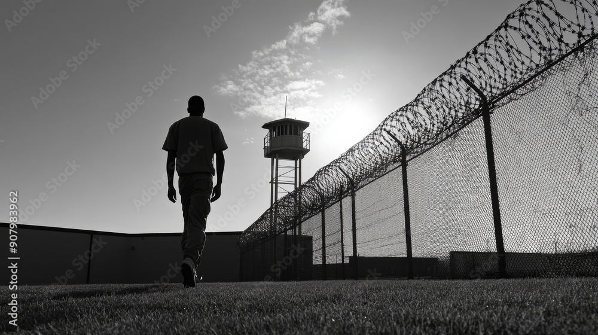

Contacto

Si tienes un caso que necesita apoyo o deseas unirte a nuestra causa, contáctanos:
WhatsApp: 5520841834
Tu donación nos permite defender legalmente a personas inocentes en México.
 Donar AhoraSomos un equipo dedicado de profesionales del derecho, encabezado por el Lic. Hugo M. López y la Lic. Suzeth León Soria. Nuestra misión es clara y firme: defender la justicia y la verdad. Creemos profundamente que nadie debería ser castigado por un delito que no cometió. Por ello, hemos unido nuestras fuerzas para litigar y brindar apoyo legal a personas que han sido injustamente sentenciadas. Nuestro trabajo es completamente altruista, impulsado por el compromiso de buscar la acreditación de la inocencia y restituir la libertad a quienes la han perdido de manera injusta.
Nuestro proceso comienza con la empatía y la escucha. Nos entrevistamos personalmente con los familiares de las personas sentenciadas y escuchamos su historia, su dolor y su esperanza. Después, tenemos un diálogo directo y humano con el sentenciado. Tras un análisis exhaustivo de cada caso y la comprobación irrefutable de su inocencia, procedemos a iniciar su defensa legal, sin ningún costo para ellos o sus familias. Nuestra meta es una sola: obtener su libertad.
Si tienes un caso que necesita apoyo o deseas unirte a nuestra causa, contáctanos:
WhatsApp: 5520841834